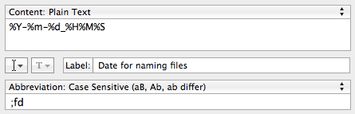

<!DOCTYPE html PUBLIC "-//W3C//DTD XHTML 1.0 Strict//EN"
"http://www.w3.org/TR/xhtml1/DTD/xhtml1-strict.dtd">
<html xmlns="http://www.w3.org/1999/xhtml" lang="en">
  <head>
        <meta charset="UTF-8" />
    <link rel="alternate" type="application/rss+xml" title="RSS" href="/rss.xml" />
    <meta name="viewport" content="width=device-width" />

    <!-- <link href="assets/css/meny.css" rel = "stylesheet"> -->
    <link href="theme/css/main_pelican.css" rel="stylesheet">

    <link rel="apple-touch-icon-precomposed" href="media/blog_logo.png"/>
    <link rel="shortcut icon" href="media/blog_logo.png"/>
    <link rel="icon" type="image/png" href="media/blog_logo.png" sizes="16x16 32x32">
    <link href='http://fonts.googleapis.com/css?family=PT+Sans:400,700|Merriweather:300,900' rel='stylesheet' type='text/css'>

    <title>Jay Hickey</title>

    <!-- Google Analytics -->
    <script type="text/javascript">
    var _gaq = _gaq || [];
    _gaq.push(['_setAccount', 'UA-32102758-1']);
    _gaq.push(['_setDomainName', 'none']);
    _gaq.push(['_setAllowLinker', 'true']);
    _gaq.push(['_trackPageview']);

    (function() {
      var ga = document.createElement('script'); ga.type = 'text/javascript'; ga.async = true;
      ga.src = ('https:' == document.location.protocol ? 'https://ssl' : 'http://www') + '.google-analytics.com/ga.js';
      var s = document.getElementsByTagName('script')[0]; s.parentNode.insertBefore(ga, s);
    })();
    </script>


<!--
    <link href="http://fonts.googleapis.com/css?family=Arimo:400,700|Inika" rel="stylesheet" type="text/css" />
    <link rel="stylesheet" type="text/css" href="./theme/bootstrap.css" />
    <link rel="stylesheet" type="text/css" href="./theme/pastie.css" />
    <link href="" type="application/atom+xml" rel="alternate" title="Jay Hickey Atom Feed" />
        <link href="rss.xml" type="application/rss+xml" rel="alternate" title="Jay Hickey RSS Feed" />
        
     -->

  </head>

  <body>
    <div class="meny-contents">


        <div id="mastheadbackground">&nbsp;</div>

        <section id="posts">

            <div id="masthead">
                <h1><a href="/">Jay Hickey</a></h1>

                <p id="description">Technology, life, and fascinating web encounters.</p>

                <nav>
                    <a href="about">About</a>
                    &nbsp;
                    |
                    &nbsp;
                    <a href="highlights"> Highlights</a>
                    &nbsp;
                    |
                    &nbsp;
                    <a href="twitter"> Twitter</a>
                </nav>
            </div>
        <div id="container">

            
                <article class="link">
    
                <header>
                    <h2>
                                                    <a href="http://pitchfork.com/news/47508-watch-purity-ring-perform-fineshrine-in-the-round/"
                            rel="bookmark">Purity Ring on Pitchfork's "+1" Series</a>
                            <span class="linkarrow">&rarr;</span>
                                                                       </h2>

                    <p>
                        <time datetime="" pubdate="pubdate">August 21, 2012</time>
                        &#0020;
                        <a class="permalink" title="Permalink to Purity Ring on Pitchfork's "+1" Series" href="2012/08/purity-ring-on-pitchfork">&#x271c;</a>
                    </p>
                </header>

                <p>Pitchfork has put together a neat video showcasing Purity Ring's live show. It's amazing that such a young, up-and-coming band can have a high tech lighting rig these days. Obviously acts like <a href="http://www.youtube.com/watch?v=cwZAoHpRZFE#t=1h16m48">Radiohead</a> and <a href="http://www.youtube.com/watch?v=8wCgxkQj_Qo">Pretty Lights</a><sup id="fnref:bonnaroo"><a class="footnote-ref" href="#fn:bonnaroo" rel="footnote">3</a></sup> blow them out of the water visually, but they're also more established and successful. I've fast-forwarded<sup id="fnref:ios"><a class="footnote-ref" href="#fn:ios" rel="footnote">1</a></sup> the video below so you can see the setup in action. Cocoon shaped lights follow the lead singer around and respond in special ways to vocals and drums. Jump back about a minute to hear Purity Ring talk about how it works:</p>
<iframe src="http://www.youtube.com/embed/y0d4KSnaez4?autohide=1&amp;fs=1&amp;autoplay=0&amp;iv_load_policy=3&amp;rel=0&amp;modestbranding=1&amp;showinfo=0&amp;hd=1#t=3m44" frameborder="0" allowfullscreen></iframe>

<p>Now I'm really excited for their show in Cincinnati this Saturday. If you're going to be in town, <a href="http://www.ticketfly.com/purchase/event/125787?wrKey=9CC5F1864C942673A09EF939A64788BD">tickets are only $12</a>. Purity Ring's<sup id="fnref:name"><a class="footnote-ref" href="#fn:name" rel="footnote">2</a></sup> debut LP <em>Shrines</em> is fantastic, so even if you can't go, make sure to at least check the album out.</p>
<div class="footnote">
<hr />
<ol>
<li id="fn:ios">
<p>If you're on an iOS or other mobile device, you probably won't be jumped forward. But in case you're wondering, I set the video to start 3 minutes and 44 seconds in.&#160;<a class="footnote-backref" href="#fnref:ios" rev="footnote" title="Jump back to footnote 1 in the text">&#8617;</a></p>
</li>
<li id="fn:name">
<p>Still having a tough time getting over how bad the name "Purity Ring" is. But in the end, it's the music that really matters I guess.&#160;<a class="footnote-backref" href="#fnref:name" rev="footnote" title="Jump back to footnote 2 in the text">&#8617;</a></p>
</li>
<li id="fn:bonnaroo">
<p>I was at the Bonnaroo show where this video was made, and those were definitely the coolest lights I'd ever seen. I don't even really listen to Pretty Lights, but the live show is a must see. I promise you won't regret it.&#160;<a class="footnote-backref" href="#fnref:bonnaroo" rev="footnote" title="Jump back to footnote 3 in the text">&#8617;</a></p>
</li>
</ol>
</div>

            </article>
            <div class="fin">&#x2110;&#x210b;</div>

                <article>
    
                <header>
                    <h2>
                                                    <a href="./2012/08/very-upset-im-not-here-anymore"
                            rel="bookmark">Very Upset I'm Not Here Anymore</a>
                                                                       </h2>

                    <p>
                        <time datetime="" pubdate="pubdate">August 21, 2012</time>
                        &#0020;
                        <a class="permalink" title="Permalink to Very Upset I'm Not Here Anymore" href="2012/08/very-upset-im-not-here-anymore">&#x271c;</a>
                    </p>
                </header>

                <p><a href="media/2012/08/hawaii-condo.jpg"></a></p>
<p>(Click to enlarge)</p>

            </article>
            <div class="fin">&#x2110;&#x210b;</div>

                <article class="link">
    
                <header>
                    <h2>
                                                    <a href="http://instagr.am/p/OdS8vbNOJ2/"
                            rel="bookmark">Last Sunset Picture, I Promise</a>
                            <span class="linkarrow">&rarr;</span>
                                                                       </h2>

                    <p>
                        <time datetime="" pubdate="pubdate">August 18, 2012</time>
                        &#0020;
                        <a class="permalink" title="Permalink to Last Sunset Picture, I Promise" href="2012/08/last-sunset-picture">&#x271c;</a>
                    </p>
                </header>

                <p></p>
<p>(Via <a href="http://instagram.com">Instagram</a>)</p>

            </article>
            <div class="fin">&#x2110;&#x210b;</div>

                <article class="link">
    
                <header>
                    <h2>
                                                    <a href="http://instagr.am/p/OcvS_NtONz/"
                            rel="bookmark">Sailed and Went Swimming With Turtles Today</a>
                            <span class="linkarrow">&rarr;</span>
                                                                       </h2>

                    <p>
                        <time datetime="" pubdate="pubdate">August 17, 2012</time>
                        &#0020;
                        <a class="permalink" title="Permalink to Sailed and Went Swimming With Turtles Today" href="2012/08/sailed-and-went-swimming-with-turtles">&#x271c;</a>
                    </p>
                </header>

                <p></p>
<p>(Via <a href="http://instagram.com">Instagram</a>)</p>

            </article>
            <div class="fin">&#x2110;&#x210b;</div>

                <article>
    
                <header>
                    <h2>
                                                    <a href="./2012/08/haleakala-volcano"
                            rel="bookmark">Haleakalā Volcano</a>
                                                                       </h2>

                    <p>
                        <time datetime="" pubdate="pubdate">August 16, 2012</time>
                        &#0020;
                        <a class="permalink" title="Permalink to Haleakalā Volcano" href="2012/08/haleakala-volcano">&#x271c;</a>
                    </p>
                </header>

                <p><a href="media/2012/08/2012-08-16_040946.jpg"></a></p>
<p>(Click to enlarge)</p>
<p>We went 10,000 ft above sea level to the peak of Haleakalā Volcano on Maui today. The view was incredible. I felt like I was on Mars with the <a href="http://en.wikipedia.org/wiki/Curiosity_rover">Curiosity rover</a>.</p>
<p>If anyone is wondering, I created this panorama with <a href="http://itunes.apple.com/us/app/autostitch-panorama/id318944927">Autostitch for iPhone</a>.</p>

            </article>
            <div class="fin">&#x2110;&#x210b;</div>

                <article class="link">
    
                <header>
                    <h2>
                                                    <a href="http://instagr.am/p/OZ3NS2tOIj/"
                            rel="bookmark">Rainbow Eucalyptus Tree</a>
                            <span class="linkarrow">&rarr;</span>
                                                                       </h2>

                    <p>
                        <time datetime="" pubdate="pubdate">August 16, 2012</time>
                        &#0020;
                        <a class="permalink" title="Permalink to Rainbow Eucalyptus Tree" href="2012/08/rainbow-eucalyptus-tree">&#x271c;</a>
                    </p>
                </header>

                <p></p>
<p>(Via <a href="http://instagram.com">Instagram</a>)</p>

            </article>
            <div class="fin">&#x2110;&#x210b;</div>

                <article class="link">
    
                <header>
                    <h2>
                                                    <a href="https://gist.github.com/3144371"
                            rel="bookmark">Regular Expressions To Mute Tweets</a>
                            <span class="linkarrow">&rarr;</span>
                                                                       </h2>

                    <p>
                        <time datetime="" pubdate="pubdate">August 16, 2012</time>
                        &#0020;
                        <a class="permalink" title="Permalink to Regular Expressions To Mute Tweets" href="2012/08/regular-expressions-to-mute-tweets">&#x271c;</a>
                    </p>
                </header>

                <p>In my <a href="2012/08/markdownify-instagram">Markdownify Instagram</a> post, I used regular expressions to create a Python dictionary out of information in a text file. While we're on the topic, <a href="https://gist.github.com/3144371">this is a nice collection</a> of regular expressions you can use to filter your tweets. Helpful for removing some of the garbage people post on Twitter. The hashtag abuse ones are particularly useful. And if you like those, there's even more <a href="https://github.com/jordanekay/SilencedBots">here</a>.</p>
<p>I believe <a href="http://tapbots.com/software/tweetbot/">Tweetbot</a> is the only Twitter client that has regex support. You can add a new mute filter by clicking on the mute button in the tab bar, then clicking "Edit" <span>&rarr;</span> "+" <span>&rarr;</span> "Mute Keyword", and sliding the Regular Expression slider to "ON" after you enter an expression in the field.</p>
<!-- 
markdownify Instagram link
tweetbot link
Arrows
Link to other regex filters
-->

            </article>
            <div class="fin">&#x2110;&#x210b;</div>

                <article class="link">
    
                <header>
                    <h2>
                                                    <a href="http://instagr.am/p/OYH2q4tONN/"
                            rel="bookmark">Perfect Sunset. I'm Never Leaving This Condo.</a>
                            <span class="linkarrow">&rarr;</span>
                                                                       </h2>

                    <p>
                        <time datetime="" pubdate="pubdate">August 16, 2012</time>
                        &#0020;
                        <a class="permalink" title="Permalink to Perfect Sunset. I'm Never Leaving This Condo." href="2012/08/perfect-sunset">&#x271c;</a>
                    </p>
                </header>

                <p></p>
<p>(Via <a href="http://instagram.com">Instagram</a>)</p>

            </article>
            <div class="fin">&#x2110;&#x210b;</div>

                <article class="link">
    
                <header>
                    <h2>
                                                    <a href="http://instagr.am/p/OVj9uKtOMa/"
                            rel="bookmark">Luau in Maui</a>
                            <span class="linkarrow">&rarr;</span>
                                                                       </h2>

                    <p>
                        <time datetime="" pubdate="pubdate">August 15, 2012</time>
                        &#0020;
                        <a class="permalink" title="Permalink to Luau in Maui" href="2012/08/luau-in-maui">&#x271c;</a>
                    </p>
                </header>

                <p></p>
<p>(Via <a href="http://instagram.com">Instagram</a>)</p>

            </article>
            <div class="fin">&#x2110;&#x210b;</div>

                <article>
    
                <header>
                    <h2>
                                                    <a href="./2012/08/markdownify-instagram"
                            rel="bookmark">Markdownify Instagram</a>
                                                                       </h2>

                    <p>
                        <time datetime="" pubdate="pubdate">August 12, 2012</time>
                        &#0020;
                        <a class="permalink" title="Permalink to Markdownify Instagram" href="2012/08/markdownify-instagram">&#x271c;</a>
                    </p>
                </header>

                <p>I've been thinking for a while now about how nice it would be to automatically create a Markdown post of the Instagram photos I take. I looked around at Instagram's API's and, while I could probably set up a way to pull directly from the API, I wanted to throw something together quickly. I'm on my way to <a href="http://en.wikipedia.org/wiki/Maui">Maui</a> for vacation, so I spent an evening making this handy little Python script that'll enable me to easily post my Instagram photos to jayhickey.com.</p>
<div class="highlight"><pre><span class="kn">import</span> <span class="nn">os</span>
<span class="kn">import</span> <span class="nn">sys</span>
<span class="kn">import</span> <span class="nn">re</span> 
<span class="kn">from</span> <span class="nn">glob</span> <span class="kn">import</span> <span class="n">glob</span>
<span class="kn">import</span> <span class="nn">urllib</span>
<span class="kn">from</span> <span class="nn">time</span> <span class="kn">import</span> <span class="n">localtime</span><span class="p">,</span> <span class="n">strftime</span>

<span class="k">def</span> <span class="nf">read_file</span><span class="p">(</span><span class="nb">file</span><span class="p">):</span>
    <span class="c"># Check for filename for Instagram file from IFTTT</span>
    <span class="n">f</span> <span class="o">=</span> <span class="nb">open</span><span class="p">(</span><span class="s">&quot;</span><span class="si">%s</span><span class="s">&quot;</span> <span class="o">%</span> <span class="p">(</span><span class="n">files</span><span class="p">),</span> <span class="n">mode</span><span class="o">=</span><span class="s">&quot;r&quot;</span><span class="p">)</span>
    <span class="n">fileLines</span> <span class="o">=</span> <span class="n">f</span><span class="o">.</span><span class="n">readlines</span><span class="p">()</span>
    <span class="n">fileDict</span> <span class="o">=</span> <span class="p">{}</span>

    <span class="c"># Create a dictionary with the Instagram info</span>
    <span class="k">for</span> <span class="n">line</span> <span class="ow">in</span> <span class="n">fileLines</span><span class="p">:</span>
        <span class="n">x</span> <span class="o">=</span> <span class="n">re</span><span class="o">.</span><span class="n">search</span><span class="p">(</span><span class="s">r&#39;([\w\@\.]+)\s*:\s*(.*)&#39;</span><span class="p">,</span> <span class="n">line</span><span class="p">)</span>
        <span class="k">if</span> <span class="n">x</span> <span class="o">!=</span> <span class="bp">None</span><span class="p">:</span>
            <span class="n">fileDict</span><span class="p">[</span><span class="n">x</span><span class="o">.</span><span class="n">group</span><span class="p">(</span><span class="mi">1</span><span class="p">)]</span> <span class="o">=</span> <span class="n">x</span><span class="o">.</span><span class="n">group</span><span class="p">(</span><span class="mi">2</span><span class="p">)</span>
    <span class="n">f</span><span class="o">.</span><span class="n">close</span><span class="p">()</span>
    <span class="k">return</span> <span class="n">fileDict</span>

<span class="k">def</span> <span class="nf">create_draft</span><span class="p">(</span><span class="n">fileDict</span><span class="p">,</span> <span class="n">draftLoc</span><span class="p">,</span> <span class="n">imgLink</span><span class="p">):</span>
    <span class="c"># Replace non alphanumerics with dashes for filename</span>
    <span class="n">c</span> <span class="o">=</span> <span class="n">re</span><span class="o">.</span><span class="n">sub</span><span class="p">(</span><span class="s">r'[\t !"#$:;%&\'()*\-/<=>?@\[\\\]^_`{|},.]+'</span><span class="p">,</span><span class="s">&quot;-&quot;</span><span class="p">,</span><span class="n">fileDict</span><span class="p">[</span><span class="s">&#39;Caption&#39;</span><span class="p">])</span>
    <span class="k">while</span> <span class="n">c</span><span class="o">.</span><span class="n">endswith</span><span class="p">(</span><span class="s">&#39;-&#39;</span><span class="p">):</span>
        <span class="n">c</span> <span class="o">=</span> <span class="n">c</span><span class="p">[:</span><span class="o">-</span><span class="mi">1</span><span class="p">]</span>
    <span class="n">c</span> <span class="o">=</span> <span class="n">c</span><span class="o">.</span><span class="n">lower</span><span class="p">()</span>

    <span class="c"># Embed the photo with Markdown</span>
    <span class="n">draft</span> <span class="o">=</span> <span class="nb">open</span><span class="p">(</span><span class="n">draftLoc</span> <span class="o">+</span> <span class="s">&quot;/</span><span class="si">%s</span><span class="s">.md&quot;</span> <span class="o">%</span> <span class="p">(</span><span class="n">c</span><span class="p">),</span> <span class="n">mode</span><span class="o">=</span><span class="s">&quot;w&quot;</span><span class="p">)</span>
    <span class="n">draft</span><span class="o">.</span><span class="n">write</span><span class="p">(</span><span class="n">fileDict</span><span class="p">[</span><span class="s">&#39;Caption&#39;</span><span class="p">]</span> <span class="o">+</span> <span class="s">&#39;</span><span class="se">\n</span><span class="s">&#39;</span><span class="p">)</span>
    <span class="n">draft</span><span class="o">.</span><span class="n">write</span><span class="p">(</span><span class="s">&quot;=====================</span><span class="se">\n</span><span class="s">&quot;</span><span class="p">)</span>
    <span class="n">draft</span><span class="o">.</span><span class="n">write</span><span class="p">(</span><span class="s">&quot;Link: </span><span class="si">%s</span><span class="s">&quot;</span> <span class="o">%</span> <span class="p">(</span><span class="n">fileDict</span><span class="p">[</span><span class="s">&#39;URL&#39;</span><span class="p">])</span> <span class="o">+</span> <span class="s">&quot;</span><span class="se">\n</span><span class="s">&quot;</span><span class="p">)</span>
    <span class="n">draft</span><span class="o">.</span><span class="n">write</span><span class="p">(</span><span class="s">&quot;publish-not-yet</span><span class="se">\n\n</span><span class="s">&quot;</span><span class="p">)</span>
    <span class="k">print</span> <span class="n">imgLink</span>
    <span class="n">draft</span><span class="o">.</span><span class="n">write</span><span class="p">(</span><span class="s">&quot;s</span><span class="s">)</span><span class="se">\n\n</span><span class="s">&quot;</span> <span class="o">%</span> <span class="p">{</span><span class="s">&quot;1&quot;</span> <span class="p">:</span> <span class="n">fileDict</span><span class="p">[</span><span class="s">&#39;Caption&#39;</span><span class="p">],</span> <span class="s">&quot;2&quot;</span> <span class="p">:</span> <span class="n">imgLink</span><span class="p">})</span>
    <span class="n">draft</span><span class="o">.</span><span class="n">write</span><span class="p">(</span><span class="s">&quot;(Via [Instagram](http://instagram.com))&quot;</span><span class="p">)</span>
    <span class="n">draft</span><span class="o">.</span><span class="n">close</span><span class="p">()</span>


<span class="k">if</span> <span class="n">__name__</span> <span class="o">==</span> <span class="s">&#39;__main__&#39;</span><span class="p">:</span>
    <span class="c"># These might not be used, so make them empty</span>
    <span class="n">Local_Image_URL_Path</span> <span class="o">=</span> <span class="s">&#39;&#39;</span>
    <span class="n">Website</span> <span class="o">=</span> <span class="s">&#39;&#39;</span>

    <span class="c"># Read input arguments</span>
    <span class="n">IFTTT_Read_Path</span> <span class="o">=</span> <span class="n">sys</span><span class="o">.</span><span class="n">argv</span><span class="p">[</span><span class="mi">1</span><span class="p">]</span>
    <span class="n">Draft_Write_Path</span> <span class="o">=</span> <span class="n">sys</span><span class="o">.</span><span class="n">argv</span><span class="p">[</span><span class="mi">2</span><span class="p">]</span>

    <span class="c"># These parameters are optional</span>
    <span class="k">if</span> <span class="nb">len</span><span class="p">(</span><span class="n">sys</span><span class="o">.</span><span class="n">argv</span><span class="p">)</span> <span class="o">&gt;=</span> <span class="mi">4</span><span class="p">:</span>
        <span class="n">Local_Image_URL_Path</span> <span class="o">=</span> <span class="n">sys</span><span class="o">.</span><span class="n">argv</span><span class="p">[</span><span class="mi">3</span><span class="p">]</span>
    <span class="k">if</span> <span class="nb">len</span><span class="p">(</span><span class="n">sys</span><span class="o">.</span><span class="n">argv</span><span class="p">)</span> <span class="o">==</span> <span class="mi">5</span><span class="p">:</span>
        <span class="n">Website</span> <span class="o">=</span> <span class="n">sys</span><span class="o">.</span><span class="n">argv</span><span class="p">[</span><span class="mi">4</span><span class="p">]</span>

    <span class="c"># Make sure the file is a text file from Instagram</span>
    <span class="n">fileList</span> <span class="o">=</span> <span class="n">glob</span><span class="p">(</span><span class="n">IFTTT_Read_Path</span> <span class="o">+</span> <span class="s">&#39;*instagr.am*.txt&#39;</span><span class="p">)</span>

    <span class="k">for</span> <span class="n">files</span> <span class="ow">in</span> <span class="n">fileList</span><span class="p">:</span>

        <span class="c"># Read the Instagram data</span>
        <span class="n">fileDict</span> <span class="o">=</span> <span class="n">read_file</span><span class="p">(</span><span class="n">files</span><span class="p">)</span>

        <span class="k">if</span> <span class="n">Local_Image_URL_Path</span> <span class="o">!=</span> <span class="s">&#39;&#39;</span> <span class="ow">or</span> <span class="n">Website</span> <span class="o">!=</span> <span class="s">&#39;&#39;</span><span class="p">:</span>
            <span class="c"># Make a local copy of the image and date it</span>
            <span class="n">image</span> <span class="o">=</span> <span class="n">urllib</span><span class="o">.</span><span class="n">URLopener</span><span class="p">()</span>
            <span class="n">eventTime</span> <span class="o">=</span> <span class="n">strftime</span><span class="p">(</span><span class="s">&quot;%Y-%m-</span><span class="si">%d</span><span class="s">_%H%M%S&quot;</span><span class="p">,</span> <span class="n">localtime</span><span class="p">())</span>
            <span class="n">fileName</span><span class="p">,</span> <span class="n">fileExtension</span> <span class="o">=</span> <span class="n">os</span><span class="o">.</span><span class="n">path</span><span class="o">.</span><span class="n">splitext</span><span class="p">(</span><span class="n">fileDict</span><span class="p">[</span><span class="s">&#39;Source&#39;</span><span class="p">])</span>
            <span class="n">imgLinkPath</span> <span class="o">=</span> <span class="n">IFTTT_Read_Path</span> <span class="o">+</span> <span class="n">eventTime</span> <span class="o">+</span> <span class="n">fileExtension</span>
            <span class="n">image</span><span class="o">.</span><span class="n">retrieve</span><span class="p">(</span><span class="n">fileDict</span><span class="p">[</span><span class="s">&#39;Source&#39;</span><span class="p">],</span> <span class="n">imgLinkPath</span><span class="p">)</span>
            <span class="n">imgURL</span> <span class="o">=</span> <span class="n">Website</span> <span class="o">+</span> <span class="n">Local_Image_URL_Path</span> <span class="o">+</span> <span class="n">eventTime</span> <span class="o">+</span> <span class="n">fileExtension</span>
        <span class="k">else</span><span class="p">:</span>
            <span class="c"># Use the image hosted by Instagram</span>
            <span class="n">imgURL</span> <span class="o">=</span> <span class="n">fileDict</span><span class="p">[</span><span class="s">&#39;Source&#39;</span><span class="p">]</span>

        <span class="c"># Create a Markdown draft</span>
        <span class="n">create_draft</span><span class="p">(</span><span class="n">fileDict</span><span class="p">,</span> <span class="n">Draft_Write_Path</span><span class="p">,</span> <span class="n">imgURL</span><span class="p">)</span>

        <span class="c"># Delete the Instagram text file from IFTTT</span>
        <span class="n">os</span><span class="o">.</span><span class="n">remove</span><span class="p">(</span><span class="n">files</span><span class="p">)</span>
</pre></div>

<h2>Installation</h2>
<p>Here's the input to run it (the last two parameters are optional):</p>
<div class="codehilite"><pre><span class="n">python</span> <span class="n">MarkdownifyInstagram</span><span class="p">.</span><span class="n">py</span> <span class="p">{{</span><span class="n">IFTTT_Read_Path</span><span class="p">}},</span> <span class="p">{{</span><span class="n">Draft_Write_Path</span><span class="p">}},</span> <span class="p">{{</span><span class="n">Local_Image_URL_Path</span><span class="p">}},</span> <span class="p">{{</span><span class="n">Website</span><span class="p">}}</span>
</pre></div>


<p>Example:</p>
<div class="codehilite"><pre>python MarkdownifyInstagram.py /home/blog/secondcrack/www/media/instagram/ /home/blog/Dropbox/Blog/drafts/ /media/instagram/ http://jayhickey.com
</pre></div>


<p>The downside to using IFTTT, according to their hilariously titled <a href="http://ifttt.com/wtf">/wtf page</a>, is that it only polls for new data every 15 minutes. So this won't happen instantly.<sup id="fnref:imp"><a class="footnote-ref" href="#fn:imp" rel="footnote">2</a></sup></p>
<p><a href="https://github.com/jayhickey/MarkdownifyInstagram">GitHub</a> is where you can find all the instructions for setting up the IFTTT recipe, running Markdownify Instagram, and even how to use a shell script and <code>iNotify</code> to automate the process. I won't go into any of that here. However, I do think it's interesting to dive a little deeper and see how the script works.</p>
<h2>Implementation</h2>
<p>Here's a look at a few of the design decisions I made while writing Markdownify Instagram.</p>
<h3>Reading the text file from IFTTT</h3>
<p>When triggered, the <a href="http://ifttt.com/recipes/49883">IFTTT recipe</a> will create a plain text file with a name like <code>http-instagr.ampoefb-ihvv0.txt</code> and these contents:</p>
<div class="codehilite"><pre>URL: http://instagram.com/p/JF1n/
Source: http://distillery.s3.amazonaws.com/media/2010/11/03/217c074328864f76b5d730837403f371_7.jpg
Caption: Deadly.
</pre></div>


<p>Python's built in <a href="http://docs.python.org/library/glob.html">glob module</a> is first used to create a list of all the Instagram text files in your <code>{{IFTTT_Read_Path}}</code>:</p>
<div class="codehilite"><pre><span class="n">fileList</span> <span class="o">=</span> <span class="n">glob</span><span class="o">.</span><span class="n">glob</span><span class="p">(</span><span class="n">IFTTT_Read_Path</span> <span class="o">+</span> <span class="s">&#39;*instagr.am*.txt&#39;</span><span class="p">)</span>
</pre></div>


<p>The <code>*</code> will match zero or more characters, so a file that starts with anything, contains <code>instagr.am</code>, ends with <code>.txt</code>, and has anything in between will be appended to <code>fileList</code>. This is the first time I've actually used the glob module. Although less powerful than regular expressions, it's perfect for finding specific files in directories.</p>
<h3>Creating a dictionary from the data</h3>
<p>After getting a list of files, <code>read_file</code> uses <code>readlines()</code> to split the text into individual lines. The regex pattern <code>r'([\w\@\.]+)\s*:\s*(.*)'</code>  creates <code>matchobject</code>'s out of those lines, then lastly the dictionary <code>fileDict</code> is created from the matches:</p>
<div class="codehilite"><pre><span class="k">for</span> <span class="n">line</span> <span class="ow">in</span> <span class="n">fileLines</span><span class="p">:</span>
    <span class="n">x</span> <span class="o">=</span> <span class="n">re</span><span class="o">.</span><span class="n">search</span><span class="p">(</span><span class="s">r&#39;([\w\@\.]+)\s*:\s*(.*)&#39;</span><span class="p">,</span> <span class="n">line</span><span class="p">)</span>
    <span class="k">if</span> <span class="n">x</span> <span class="o">!=</span> <span class="bp">None</span><span class="p">:</span>
        <span class="n">fileDict</span><span class="p">[</span><span class="n">x</span><span class="o">.</span><span class="n">group</span><span class="p">(</span><span class="mi">1</span><span class="p">)]</span> <span class="o">=</span> <span class="n">x</span><span class="o">.</span><span class="n">group</span><span class="p">(</span><span class="mi">2</span><span class="p">)</span>
</pre></div>


<p>Regex is hard to look at, but it's not too bad once you grasp the syntax. Google's <a href="http://code.google.com/edu/languages/google-python-class/regular-expressions.html">regular expressions tutorial</a> is a good place to start, and you can learn a whole lot more just by searching the web. Each set of parenthesis corresponds to a group match that will be stored in an additional element of <code>x</code>. Because there are two sets of parenthesis, <code>x</code> will have a group size of 3. <code>x.group(0)</code> will contain all of <code>line</code>, <code>x.group(1)</code> will contain the text before the : (the first set of parenthesis in the regex), and x.group(2) will have everything after (the second set). Like this:</p>
<ul>
<li><code>x.group(0) = 'URL: http://instagram.com/p/JF1n/'</code></li>
<li><code>x.group(1) = 'URL'</code></li>
<li><code>x.group(2) = 'http://instagram.com/p/JF1n/'</code></li>
</ul>
<p>After the <code>for</code> loop completes, fileDict will look something like this</p>
<div class="codehilite"><pre><span class="n">fileDict</span> <span class="o">=</span> <span class="p">{</span><span class="s">&#39;URL&#39;</span><span class="p">:</span><span class="s">&#39;http://instagram.com/p/JF1n/&#39;</span><span class="p">,</span> <span class="s">&#39;Source&#39;</span><span class="p">:</span><span class="s">&#39;http://distillery.s3.amazonaws.com/media/2010/11/03/217c074328864f76b5d730837403f371_7.jpg&#39;</span><span class="p">,</span> <span class="s">&#39;Caption&#39;</span><span class="p">:</span><span class="s">&#39;Deadly.&#39;</span><span class="p">}</span>
</pre></div>


<p>So printing the URL is as simple as typing <code>print fileDict['URL']</code>. </p>
<!-- Mention Local hosting instead of Amazon S3 -->

<h3>Saving the local image file</h3>
<p>If the last two parameters are entered, your photo will be saved locally—so you aren't relying on Instagram's S3 hosting. If Facebook ever decides to shut down Instagram, you won't have a broken embedded image. To accomplish this, I used the Python <code>urllib</code> module to save an image from a URL by setting <code>image = urllib.URLopener()</code>, then</p>
<div class="codehilite"><pre><span class="n">image</span><span class="o">.</span><span class="n">retrieve</span><span class="p">(</span><span class="n">fileDict</span><span class="p">[</span><span class="s">&#39;Source&#39;</span><span class="p">],</span> <span class="n">imgLinkPath</span><span class="p">)</span>
</pre></div>


<p>where <code>fileDict['Source']</code> is the link to the Instagram image and <code>imgLinkPath</code> is where the image saved will be saved, e.g., <code>/home/blog/secondcrack/www/media/instagram/2012-11-30_062759.jpg</code></p>
<p>The local image is named using <code>strftime("%Y-%m-%d_%H%M%S", localtime())</code>. This creates a string formatted something like <code>2012-11-30_062759</code>, where:</p>
<ul>
<li>%Y is the year with century as a decimal (use %y for without century, resulting in <code>12</code> instead of <code>2012</code>)</li>
<li>%m is the month from <code>[01-12]</code></li>
<li>%d is the day of the month from <code>[01-31]</code></li>
<li>%H is the hour in 24-hour time (use <code>%I</code> for 12-hour time)</li>
<li>%M is the minute from <code>[00-59]</code></li>
<li>%S is the second from <code>[00-61]</code><sup id="fnref:time"><a class="footnote-ref" href="#fn:time" rel="footnote">1</a></sup></li>
</ul>
<p>You can see the see the other <code>strftime</code> directives <a href="http://docs.python.org/library/time.html#time.strftime">here</a></p>
<p>I've been using this convention ever since Gabe over at MacDrifter <a href="http://www.macdrifter.com/2012/07/why-file-time-stamps-are-unreliable.html">recommended it</a>. It's very easy to both sort and quickly look at. I love it so much I even set this as a <a href="http://smilesoftware.com/TextExpander/">TextExpander</a> shortcut for naming files and photos on my Mac:</p>
<p></p>
<h3>Creating the Markdown draft</h3>
<p>The final function, <code>create_draft</code>, is pretty straightforward and will create a Markdown file that looks like this:</p>
<div class="codehilite"><pre>Deadly.
=====================
type: Link
publish-not-yet


(Via [Instagram](http://instagram.com))
</pre></div>


<h2>Conclusion</h2>
<p>Overall, I'm pretty happy with the way Markdownify Instagram turned out. It produces a nice, simple post that's easy to modify.<sup id="fnref:mod"><a class="footnote-ref" href="#fn:mod" rel="footnote">3</a></sup> There's also tons of possiblities for new features and expansions. I find it extremely useful, so get prepared for an influx of pictures posted here. Aloha!</p>
<p><strong>Update:</strong> I've made a small addition to the script's <code>create_draft</code> function. Non-alphanumerics are now replaced with dashes in the filename. So any spaces or special characters will be turned into dashes for the .md slug. </p>
<p>I used a little more regex magic to make the substitution. Here's what it looks like:</p>
<div class="highlight"><pre> <span class="c"># Repace non-alphanumerics with dashes for filename</span>
    <span class="n">c</span> <span class="o">=</span> <span class="n">re</span><span class="o">.</span><span class="n">sub</span><span class="p">(</span><span class="s">r&#39;[\t !&quot;#$:;%&amp;</span><span class="se">\&#39;</span><span class="s">()*\-/&lt;=&gt;?@\[</span><span class="se">\\</span><span class="s">\]^_`{|},.]+&#39;</span><span class="p">,</span><span class="s">&quot;-&quot;</span><span class="p">,</span><span class="n">fileDict</span><span class="p">[</span><span class="s">&#39;Caption&#39;</span><span class="p">])</span>
    <span class="k">while</span> <span class="n">c</span><span class="o">.</span><span class="n">endswith</span><span class="p">(</span><span class="s">&#39;-&#39;</span><span class="p">):</span>
        <span class="n">c</span> <span class="o">=</span> <span class="n">c</span><span class="p">[:</span><span class="o">-</span><span class="mi">1</span><span class="p">]</span>
    <span class="n">c</span> <span class="o">=</span> <span class="n">c</span><span class="o">.</span><span class="n">lower</span><span class="p">()</span>
</pre></div>

<p>Make sure to grab the latest commit off <a href="https://github.com/jayhickey/MarkdownifyInstagram">GitHub</a> so you have this feature.</p>
<div class="footnote">
<hr />
<ol>
<li id="fn:time">
<p>Why <code>[00-61]</code> instead of <code>[00-59]</code>? To account for both leap seconds and the very rare double leap seconds, when they occur. &#160;<a class="footnote-backref" href="#fnref:time" rev="footnote" title="Jump back to footnote 1 in the text">&#8617;</a></p>
</li>
<li id="fn:imp">
<p>Although it would be nice if it were instant, I don't think this is a very big deal.&#160;<a class="footnote-backref" href="#fnref:imp" rev="footnote" title="Jump back to footnote 2 in the text">&#8617;</a></p>
</li>
<li id="fn:mod">
<p>If you wanted, you could even tweak the <code>create_draft</code> function to include some additional html tags before and after the image for easy CSS tweaking. Make it look like a Polaroid or something.&#160;<a class="footnote-backref" href="#fnref:mod" rev="footnote" title="Jump back to footnote 3 in the text">&#8617;</a></p>
</li>
</ol>
</div>

            </article>
            <div class="fin">&#x2110;&#x210b;</div>

                <article class="link">
    
                <header>
                    <h2>
                                                    <a href="http://www.digia.com/Qt/About-us/News/Digia-to-Acquire-Qt-from-Nokia/"
                            rel="bookmark">Digia to Acquire Qt from Nokia</a>
                            <span class="linkarrow">&rarr;</span>
                                                                       </h2>

                    <p>
                        <time datetime="" pubdate="pubdate">August 09, 2012</time>
                        &#0020;
                        <a class="permalink" title="Permalink to Digia to Acquire Qt from Nokia" href="2012/08/digia-to-acquire-qt-from-nokia">&#x271c;</a>
                    </p>
                </header>

                <blockquote>
<p>Digia becomes responsible for all the Qt activities formerly carried out by Nokia. These include product development, as well as the commercial and open source licensing and service business. Following the acquisition, Digia plans to quickly enable Qt on Android, iOS and Windows 8 platforms.</p>
</blockquote>
<p>This is a great move. I use Qt heavily to develop desktop GUIs for work, and am a big fan of it for cross-platform applications. The SDK released back in 2010 is a nice environment to work in, but I've had so many nightmares trying to bundle applications for older Linux machines (specifically Fedora 9 equipment that can't be upgraded), that I always end up resorting back to Qt Creator. I hope Digia starts pushing Qt forward at a faster, more modern pace. They bought the commercial licensing and professional services side of Qt over a year ago, so this should be a smooth transition.</p>
<p>Digia's plans to add in modern mobile development in Qt will also be interesting. I've never dabbled with any Symbian or Meego development in Qt, but once Nokia announced their transition to Windows Phone, it was pretty obvious Qt's mobile front had a dark future with them at the helm. Turning this new direction, I'm excited to see how iOS development will be implemented in Qt.</p>

            </article>
            <div class="fin">&#x2110;&#x210b;</div>

                <article class="link">
    
                <header>
                    <h2>
                                                    <a href="http://www.wired.com/playbook/2012/07/olympic-swim-meet-slowed-by-textile-suits/"
                            rel="bookmark">Why Olympic Swimming Records Aren't Being Broken</a>
                            <span class="linkarrow">&rarr;</span>
                                                                       </h2>

                    <p>
                        <time datetime="" pubdate="pubdate">August 01, 2012</time>
                        &#0020;
                        <a class="permalink" title="Permalink to Why Olympic Swimming Records Aren't Being Broken" href="2012/08/why-olympic-swimming-records-arent-being-broken">&#x271c;</a>
                    </p>
                </header>

                <p>I remember the commotion around ultra efficient <a href="http://en.wikipedia.org/wiki/LZR_Racer">Speedo LZR Racer</a> during the Beijing Olympics, but I didn't realize they were banned in '09:</p>
<blockquote>
<p>At the 2009 World Championships in Rome, swimmers set 43 world records in the last major meet for the super suits, which were banned at the end of that year. Since then, only five swimming world records have been broken — the three thus far in London and two at the 2011 World Championships in Shanghai.</p>
</blockquote>
<h2>How they work</h2>
<p>The suits are a mix of woven elastane-nylon and polyurethane panels that were wind tunnel tested by NASA—making it smoother than shaven skin. And instead of sewed together, the the seams are ultrasonically welded (yes, using <em>sound</em>).</p>
<p>These factors contribute to the hydrodynamics by reducing drag, and the LZR Racer then compresses the body and traps air for added buoyancy. On the downside, they can only be worn once or twice. Because of the thinness of the materials, a rip can happen at any moment. But when you have <a href="http://www.london2012.com/news/articles/review-phelps-books-his-place-history.html">19 Olympic Medals</a><sup id="fnref:outdated"><a class="footnote-ref" href="#fn:outdated" rel="footnote">1</a></sup>, that's just a business expense.</p>
<p>A small tidbit for you fashionistas—the cosmetics of the LZR were designed by Comme De Garçons.</p>
<h2>Banning</h2>
<p>Swimmers started to wear multiple LZR's overtop one another for an added buoyancy effect. <a href="http://en.wikipedia.org/wiki/Therese_Alshammar">Therese Alshammar</a> of Sweden had her world record in the 50m butterfly taken from her because she used two suits, claiming the second was backup for a possible "wardrobe malfunction" if the top suit tore.</p>
<p>But <a href="http://en.wikipedia.org/wiki/FINA">FINA</a> stepped in, and started limiting the suits' buoyancy and thickness. Buoyancy must now be below 0.5 Newton and have a thickness no greater than 0.8mm. Also no more than 50% of the suit can be covered in non-permeable materials (such as the NASA polyurethane panels).</p>
<p>I understand the reasoning for the ban, but it's a shame that such a fascinating use of technology will be stunted by Olympic rules. </p>
<div class="footnote">
<hr />
<ol>
<li id="fn:outdated">
<p>This will probably be outdated in the next 24-48 hours.&#160;<a class="footnote-backref" href="#fnref:outdated" rev="footnote" title="Jump back to footnote 1 in the text">&#8617;</a></p>
</li>
</ol>
</div>

            </article>
            <div class="fin">&#x2110;&#x210b;</div>

                <article class="link">
    
                <header>
                    <h2>
                                                    <a href="http://www.dailydip.com/if-video-games-were-made-into-movies-20-cool-posters/"
                            rel="bookmark">Video Game Movies</a>
                            <span class="linkarrow">&rarr;</span>
                                                                       </h2>

                    <p>
                        <time datetime="" pubdate="pubdate">July 31, 2012</time>
                        &#0020;
                        <a class="permalink" title="Permalink to Video Game Movies" href="2012/07/video-game-movies">&#x271c;</a>
                    </p>
                </header>

                <p>I can't get enough of these "video game turned movie" posters. I especially like the <em>Portal</em> one—nice subtle details. Story by Eddy Kitsis and Adam Horowitz (<em>Lost</em> writers), Joseph Kosinski (of <em>TRON: Legacy</em> fame) as the director, and of course starring Natalie Portman. Oh how happy I would be if this got made.</p>
<p><a href="media/2012/07/portal-movie.jpg"></a></p>

            </article>
            <div class="fin">&#x2110;&#x210b;</div>

                <article class="link">
    
                <header>
                    <h2>
                                                    <a href="http://www.technologyreview.com/news/428494/startup-uses-a-smartphone-compass-to-track-people/"
                            rel="bookmark">Using Magnetic Fields to Improve Smartphone Location Accuracy</a>
                            <span class="linkarrow">&rarr;</span>
                                                                       </h2>

                    <p>
                        <time datetime="" pubdate="pubdate">July 17, 2012</time>
                        &#0020;
                        <a class="permalink" title="Permalink to Using Magnetic Fields to Improve Smartphone Location Accuracy" href="2012/07/using-magnetic-fields-to-improve-location">&#x271c;</a>
                    </p>
                </header>

                <p>The technology is accurate to between 10 centimeters and two meters, uses your phone's compass, and <em>no upfront infrastructure</em> is needed: </p>
<blockquote>
<p>Indoor Atlas's technology works by analyzing the magnetic field inside a building. The structure of a building causes disturbances to the Earth's magnetic field. Once these disturbances are mapped, people can be pinpointed within them through their phone's magnetometer. Indoor Atlas's product arose from research findings that showed the signature magnetic field within buildings was sufficiently varied and stable to be used for navigation, says company founder and computer science professor Janne Haverinen.</p>
</blockquote>
<p>If this works as advertised, the possibilities are endless. An app could route you around a store based on your shopping list, automatically checking off the items as you go. Or let you find exactly where your friend is in a busy shopping mall. And businesses don't have to drop the dough to fill the place with WiFi or NFC antennas. I often use the excellent <a href="http://aisle411.com/">aisle411</a> app for in-store navigation at my local Kroger. But the lack of a "blue dot" showing my present location within in the store results in me staring too long at my phone, trying not to block the isle.</p>
<p>This would dramatically improve <a href="http://en.wikipedia.org/wiki/Geo-fence">geofencing</a> too. I constantly take advantage of the nearby contexts features of <a href="http://www.omnigroup.com/products/omnifocus-iphone/">Omnifocus for iPhone</a>, such as setting reminders for leaving or arriving at my work and home. It's also great for setting specific searches as locations, such as "Grocery Store" or "Walgreens" (I look forward to giving the just released, "iOS Reminders on streoids" app, <a href="http://builtbysnowman.com/">Checkmark</a>, a spin too). There's a constant vexation with this geofencing though. To save battery, it doesn't use full GPS. So it isn't accurate enough, especially indoors. I find myself only setting "arriving" reminders, because the "leaving" reminder to grab the package I need to take to FedEx doesn't end up going off until I'm already in my car and heading down the road. But add integration with this Indoor Atlas technology, and the alert could go off the second I step out the front door. We're at the tip of the iceberg when it comes to the potential of geofencing, and as a impressively forgetful person, I can't wait to see this take off.</p>

            </article>
            <div class="fin">&#x2110;&#x210b;</div>

                <article class="link">
    
                <header>
                    <h2>
                                                    <a href="http://www.timbueno.com/2012/07/05/tweet-archiver"
                            rel="bookmark">Tweet Archiver</a>
                            <span class="linkarrow">&rarr;</span>
                                                                       </h2>

                    <p>
                        <time datetime="" pubdate="pubdate">July 06, 2012</time>
                        &#0020;
                        <a class="permalink" title="Permalink to Tweet Archiver" href="2012/07/tweet-archiver">&#x271c;</a>
                    </p>
                </header>

                <p>Super handy script by my buddy Tim Bueno. Grabs all of your past tweets (well, the last 3200) and whips them together into a nice plain text file. Chuck the text file from Tim's script into Dropbox, combine it with this <a href="http://ifttt.com/recipes/37991">IFTTT Recipe</a>, and everything new you tweet will be appended, keeping it up to date. Love it.</p>
<p>It never hurts to have a local backup of the digital information that matters to you. Especially when it's a free service you don't pay for, like Twitter. One day, everything might disappear.</p>

            </article>
            <div class="fin">&#x2110;&#x210b;</div>

                <article class="link">
    
                <header>
                    <h2>
                                                    <a href="http://vimeo.com/44878206"
                            rel="bookmark">Dubstep Dispute</a>
                            <span class="linkarrow">&rarr;</span>
                                                                       </h2>

                    <p>
                        <time datetime="" pubdate="pubdate">July 06, 2012</time>
                        &#0020;
                        <a class="permalink" title="Permalink to Dubstep Dispute" href="2012/07/dubstep-dispute">&#x271c;</a>
                    </p>
                </header>

                <p>Awesome animation in this video. And the droids look like they're from Star Wars, making it even better. </p>
<iframe src="http://player.vimeo.com/video/44878206?title=0&amp;byline=0&amp;portrait=0&amp;color=ff0000&amp;fullscreen=1&amp;autoplay=0" frameborder="0"></iframe>

            </article>
            <div class="fin">&#x2110;&#x210b;</div>

                <article class="link">
    
                <header>
                    <h2>
                                                    <a href="http://www.theatlanticwire.com/national/2012/06/how-do-you-settle-tie-track-meet/53873/"
                            rel="bookmark">Incredible Tie in the Olympic Trials</a>
                            <span class="linkarrow">&rarr;</span>
                                                                       </h2>

                    <p>
                        <time datetime="" pubdate="pubdate">June 27, 2012</time>
                        &#0020;
                        <a class="permalink" title="Permalink to Incredible Tie in the Olympic Trials" href="2012/06/olympic-trials-tie">&#x271c;</a>
                    </p>
                </header>

                <p>An unprecedented tie:</p>
<blockquote>
<p>Sprinters Jeneba Tarmoh and Allyson Felix appeared to finish third and fourth in the final of the women's 100-meter dash, but the state of the art cameras — that shoot at 3,000 frames per <em>second</em> — showed that they actually crossed the finish line at the exact same time. Normally, that wouldn't be such a big deal except that the race was also being used to determine the runners who will represent the U.S. at the London Olympics next month. The U.S. is only allowed to send three runners and number four will watch from home.</p>
</blockquote>
<p>This is nuts! Tarmoh and Felix ran a time of 11.07 seconds. Taking it an extra decimal place, they were still tied at 11.068. It's coming down to either a run-off or a coin toss. Both women have the same coach, and are competing in the 200m dash as well (finals are this Friday at 9:50 PM EST). So if at least one of them qualifies in the 200, hopefully they'll let the other go in the 100. Having all your hopes and dreams of the Olympics come down to a <em>coin toss?</em>  I couldn't even imagine.</p>

            </article>
            <div class="fin">&#x2110;&#x210b;</div>

                <article class="link">
    
                <header>
                    <h2>
                                                    <a href="http://justinkan.com/the-first-time-i-used-programming-at-work"
                            rel="bookmark">The First Time I Used Programming at Work</a>
                            <span class="linkarrow">&rarr;</span>
                                                                       </h2>

                    <p>
                        <time datetime="" pubdate="pubdate">June 25, 2012</time>
                        &#0020;
                        <a class="permalink" title="Permalink to The First Time I Used Programming at Work" href="2012/06/the-first-time-i-used-programming-at-work">&#x271c;</a>
                    </p>
                </header>

                <blockquote>
<p>I excitedly told my boss that I thought I could automate this painful and tedious process (which had to be done several times a year). I can’t remember her specific words, but she basically told me to stop working on that and just do it the way they had been: she didn’t believe it was going to work and thought it was a waste of time.</p>
<p>Well, double f--- that. A couple more hours of applied effort and I had a macro that looped through all the images in a directory tree and laid them out in Excel. I spent the next four days surfing the web and handing out files.</p>
<p>This is why I encourage everyone to learn some basic programming.</p>
</blockquote>
<p>I've independently created a program just like this at a job, and remember my manager initially saying something very similar. Not only does it get the task done faster, but there's something very satisfying about saving yourself and other people boatloads of time with a program.</p>

            </article>
            <div class="fin">&#x2110;&#x210b;</div>

                <article class="link">
    
                <header>
                    <h2>
                                                    <a href="http://www.youtube.com/watch?v=tXBCfKa_2uw&feature=player_embedded"
                            rel="bookmark">'Monsters University' Teaser Trailer(s)</a>
                            <span class="linkarrow">&rarr;</span>
                                                                       </h2>

                    <p>
                        <time datetime="" pubdate="pubdate">June 21, 2012</time>
                        &#0020;
                        <a class="permalink" title="Permalink to 'Monsters University' Teaser Trailer(s)" href="2012/06/monsters-university-teaser-trailer">&#x271c;</a>
                    </p>
                </header>

                <p>Although <em>Brave</em> comes out tomorrow, I can't help but also be excited for Pixar's 2013 film, <em>Monsters University</em>. A teaser trailer has been released for the prequel to the best Pixar movie ever. It'll be playing before <em>Brave</em> this weekend.</p>
<p>There's four versions with different jokes, so make sure to watch them all at <a href="http://www.disney.com/MonstersUniversity">Disney</a>, <a href="http://trailers.apple.com/trailers/disney/monstersuniversity">Apple</a>, <a href="http://movies.yahoo.com/movie/monsters-university/trailers/monsters-university-teaser-trailer-29717274.html">Yahoo</a>, and <a href="http://www.huffingtonpost.com/2012/06/20/monsters-university-trailer-teaser-video_n_1610673.html">Huffington Post</a>. The Apple one is my favorite:</p>
<iframe src="http://www.youtube.com/embed/tXBCfKa_2uw?autohide=1&amp;fs=1&amp;autoplay=0&amp;iv_load_policy=3&amp;rel=0&amp;modestbranding=1&amp;showinfo=0&amp;hd=1" frameborder="0" allowfullscreen></iframe>

            </article>
            <div class="fin">&#x2110;&#x210b;</div>

                <article class="link">
    
                <header>
                    <h2>
                                                    <a href="http://www.slate.com/articles/life/culturebox/2012/06/jonah_lehrer_self_plagiarism_the_new_yorker_staffer_stopped_being_a_writer_and_became_an_idea_man_.html"
                            rel="bookmark">Why People Like Jonah Lehrer Are Stupid</a>
                            <span class="linkarrow">&rarr;</span>
                                                                       </h2>

                    <p>
                        <time datetime="" pubdate="pubdate">June 21, 2012</time>
                        &#0020;
                        <a class="permalink" title="Permalink to Why People Like Jonah Lehrer Are Stupid" href="2012/06/why-people-like-jonah-lehrer-are-stupid">&#x271c;</a>
                    </p>
                </header>

                <p>Turns out, a large amount of <a href="http://www.newyorker.com/online/blogs/frontal-cortex/2012/06/daniel-kahneman-bias-studies.html"><em>The New Yorker</em> piece</a> that I <a href="2012/06/16/why-smart-people-are-stupid">linked to</a> last week consisted of recycled material: </p>
<blockquote>
<p>The victim: Jonah Lehrer. The newly minted New Yorker staff writer’s June 12 blog post “Why Smart People Are Stupid” copied, at times word for word, three paragraphs from Lehrer’s 2011 Wall Street Journal story “The Science of Irrationality.” A few hours later, New York’s Joe Coscarelli and writer Jacob Silverman discovered a bunch more instances in which Lehrer 
reheated his leftovers.</p>
</blockquote>
<p>Journalists found out today that <a href="http://www.edrants.com/how-jonah-lehrer-recycled-his-own-material-for-imagine/">Lehrer's been doing this for years</a>. In 2006, he even plagiarized excerpts from an essay by fellow <em>New Yorker</em> colleague Malcolm Gladwell. So apparently, pressing ⌘-C then ⌘-V makes you a journalist now.</p>

            </article>
            <div class="fin">&#x2110;&#x210b;</div>

    


                <div class="nav">
            <ul>
                <div class="navParent">
                                <div class="PrevArr">
                        <a href="./index3.html" class="minimal">‹ Previously</a>
                    </div>
                
                                                        <div class="NextArr">
                        <a href="./index.html" class="minimal">Recently ›</a>
                    </div>
                                <br style="clear:both"/>
                <div>
                        </ul>
        </div>


        <footer>
            <p>&copy; 2011-2013 John Hickey. All rights reserved. <a href="rss.xml">RSS feed</a></p>

        </footer>
        </section>
    </div>
    </div>

  </body>
</html>